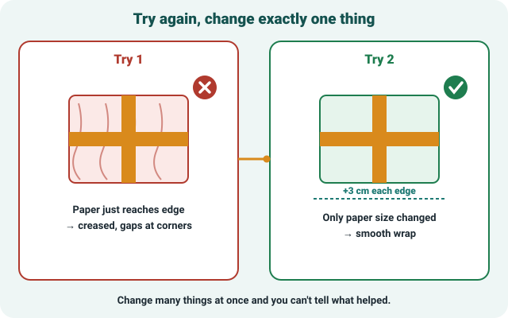

K6 · Adaptability and persistence › Level 1 Exploring
When plans change: say what confuses you and keep working
This lesson teaches how to work when things change. The inner side (staying calm, meditation, Stoicism) is covered on tamhonkhoe.com. The next lesson, at Level 2: Get used to new tools and processes quickly.
1. Objectives
- Ask 2 questions to understand your task when plans change: what to do now, and what happens to the old task.
- Try again at a task that did not work, changing one thing in how you do it.
2. Retrieval warm-up
- What are the three steps when you are stuck?
- Which kinds of task must you ask about straight away, without trying first?
Answers
- Try once yourself; say exactly where you are stuck; ask the right person at the right time.
- Tasks about safety, customers' money, or unfamiliar machines.
Review: Say exactly where you are stuck.
3. Explanation
At work, plans change often. Customers arrive early. A delivery is late. Your manager moves you to another counter. This is normal. It is nobody's fault.
New people often react in one of two unhelpful ways. One is to stand still and wait for someone to tell them. The other is to nod without understanding, then do it wrong.
When plans change, ask 2 questions:
Two questions when plans change
- "What should I do first now?"So you know the new task and what comes first.
- "What about the task I'm in the middle of?"So the old task is not forgotten halfway.
Saying what confuses you is good working practice, not weakness. "I'm not clear yet. Could you repeat the part about…" helps you avoid mistakes.
When it does not work the first time. Getting a new task wrong the first time is normal. What matters is doing one thing differently next time. Do not repeat exactly the same method.
1. See what did not work 2. Change one thing 3. Try again
Example: your gift wrapping comes out creased. Next time, cut the paper 3 cm wider than the edge of the box. If you change only one thing, you know whether that thing helped.
If you have tried two or three times and it still does not work, go back to the previous lesson. Say exactly where you are stuck, and ask for help.

4. Workplace example
Hypothetical scenario. Sam works part-time in a noodle restaurant. He is washing dishes when the manager calls: "Sam, come and help carry bowls out, it's really busy."
Sam does not just stand there. He asks quickly:
"Which tables first? And the dishes I'm washing, should I leave them or ask someone?"
The manager answers: carry them out in order-ticket order, and Rosa will finish the dishes. Sam dries his hands and goes to carry bowls.
The first time he carries two bowls at once, Sam spills some soup. Next time, he uses a tray instead of his hands.
Why this works: Sam asks both questions and does not leave the old task undone. When something does not work, he changes one thing and tries again.
5. Practice
Hypothetical scenario. You are an intern in an office, entering survey data. Your supervisor messages: "Please stop the data entry and get the meeting room ready for visitors at 10."
Write the 2 questions you would message back.
Hint 1
What does getting the meeting room ready involve? That is "what to do first".
Hint 2
The data you are entering: save it, and continue when?
Model answer
"What does the room need, and for how many people? I'll save the data now. Is it OK if I carry on after the meeting?"
6. Self-check
Choose an answer. Every option has an explanation.
Question 1. You are stacking shelves when you are called to the till. Which question matters most?
-
Not quite. This does not help you understand the new task.
-
Correct. Correct. Asking about the old task stops it from being forgotten.
-
Not quite. The half-unpacked box may block the aisle or be forgotten.
Question 2. You do not understand a new instruction, but your manager is in a hurry. What do you do?
-
Not quite. Guessing makes mistakes likely, and fixing them takes longer.
-
Correct. Correct. Saying briefly what confuses you helps you avoid mistakes.
-
Not quite. Standing still slows the work. A short question right away is better.
Question 3. Your first gift wrapping comes out creased. What is the best way to try again?
-
Not quite. Repeating the same method usually gives the same result.
-
Correct. Correct. Changing one thing tells you whether that thing works.
-
Not quite. If you change many things at once, you cannot tell what helped.
Question 4. You have tried 3 times and it still does not work. What is the next step?
-
Correct. Correct. After a few tries, ask for help, as in the previous lesson.
-
Not quite. Giving up does not solve the problem.
-
Not quite. Struggling for too long wastes time. Ask for help.
7. Reflection
- The last time plans changed suddenly, how did you react?
- Which question would have helped you do better that time?
8. Real-world application
Over the next 7 days, when there is a small change in your study or work, ask both questions. Choose one task that did not work, change one thing and try again. Write the result in your journal.
9. Metadata
| skill | K6 · Adaptability and persistence |
|---|---|
| level | Level 1 · Exploring |
| group | N2 |
| framework_map | WEF: Resilience, flexibility and agility; SkillsFuture CCS: Adaptability; LifeComp: P2 Flexibility (reference only) |
| original | Vietnamese version |
| updated | 2026-11-14 |
Finish the lesson
Mark it as done and the site suggests reviews after 1, 3 and 7 days. The data stays on your device only.
Suggested reviews: